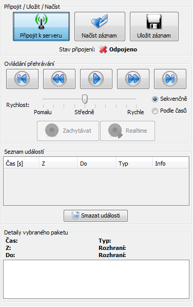
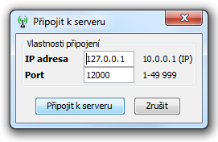
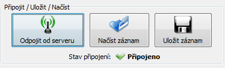

Stiskneme tlačítko Připojit k serveru v ovládacím panelu:
Ve vlastnostech připojení vyplníme IP adresu a port, kde běží síťový simulátor PSImulator a stiskneme tlačítko Připojit k serveru:
Pokud je vše správně nastaveno, tak se oba programy spojí a v ovládacím panelu se zobrazí Stav připojení: Připojeno:
Další částí tutorialu je: Přijímání událostí a pohyb v seznamu.